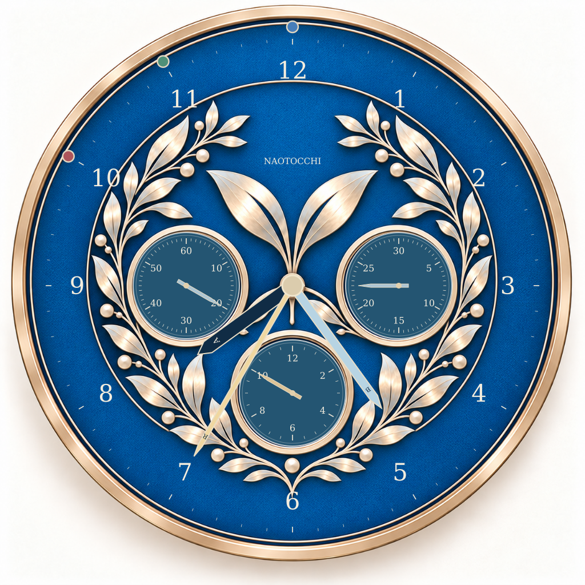
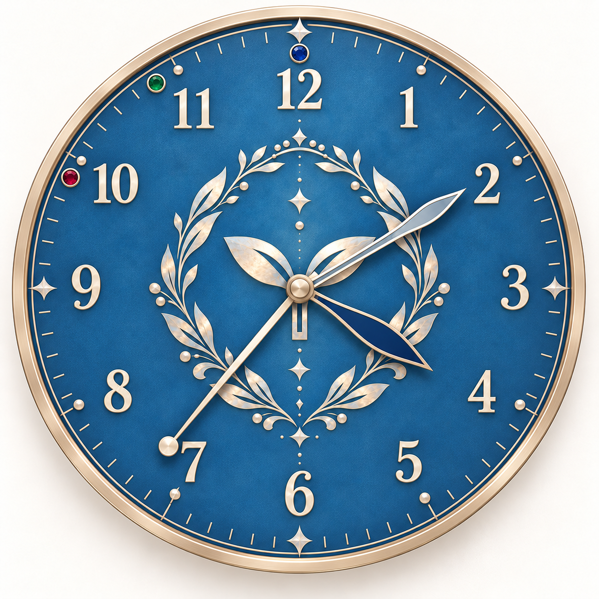

A配置そだちを中央へ
中央：R＝共通ラウンド / A・B＝そだち
左・右：A・Bの残り時 / 下：終了ラウンド
TRI-COMPAX / DESIGN STUDY
銀の葉と双葉を受け継いだ、
三つの小文字盤を持つ人生の時計。
A＋Bを基準に、同じ文字盤・同じ6本の針で、
「そだち」と「残り時」の置き場所を比べます。
本人限定のデザイン試作。A／B配置の正式採用は評価後。

01 / ONE FACE, TWO READINGS
装飾・外枠・小文字盤の位置・目盛りは共通。左右60／30、下12の時計らしい数字を読み替えます。図は現在の入力値に連動します。
02 / TRY SIX HANDS
同じ入力を両案へ反映。針の色・太さ・長さは固定です。ゲーム状態は保存しません。
ラウンド11・12、終了11・12は将来拡張の表示試験です。正式ゲームの10ラウンド・そだち100は変更していません。残り時は今回の表示比較値で、減算・時間経過ルールを実装したものではありません。
| 配置・針 | 値 | 角度 | 目盛り番号 | 一致 |
|---|
03 / THE SCALE MATTERS
60分割の1目盛りは6°。そだち5を18°にすると、常に3目盛り進みます。30分割では同じ18°が1.5目盛りとなり、5・15・25…は中間に来ます。
| 換算 | 角度 | 60分割 | 30分割 |
|---|---|---|---|
| ラウンド／残り時 1 | 30° | 5目盛り：一致 | 2.5目盛り：奇数は中間 |
| そだち5：100で一周 | 18° | 3目盛り：一致 | 1.5目盛り：奇数番目は中間 |
| そだち5：従来換算 | 15° | 2.5目盛り：中間 | 1.25目盛り：中間 |
| 終了10 / 11 / 12 | 300 / 330 / 360° | 下12時間表示・24分割の20 / 22 / 24目盛りに一致 | |
提案の60分割＋100で一周なら、A・B配置とも指定値はすべて目盛りに一致します。標準比較の30分割を厳密に維持する場合、Aでは右の残り時の奇数、Bでは右のそだち5・15・25…が中間になります。右だけ刻みを増やす変更を明示して比較しています。
目盛りを増やさない第三の換算も比較できます。「既存目盛り優先」では、小文字盤のそだち5＝12°（100＝240°）、残り時1＝24°（12＝288°）と読み替えます。右30分割でも両配置の全値が一致し、小文字盤では0と最大値も重なりません。中央は100で一周・残り時1＝30°を維持。左右で60／30の印字を違う倍率で読む必要があります。
100で一周の場合、0と100（残り時0と12）は同じ上方向です。画面では常に数値と「満了／最大」を併記。実物では着脱式の0／MAX札や機械式状態窓が必要です。針だけでは区別できません。
| そだち | 一周100：角度 | 中央60・左60位置 | 右30表示値 | 従来：角度 |
|---|
04 / FROM A＋B

双葉は中央の上側に残し、銀の葉は小文字盤の周囲へ再配置。小文字盤の目盛りの背面は青で整理し、装飾と読み取り領域を分けました。
針が双葉や小文字盤を横切る瞬間はあります。太さを変えて識別しますが、全角度で装飾や目盛りが完全に見えるわけではありません。実物では軸の高さ・針の隙間・反射を確認します。
左・右の小文字盤は同径・左右対称。数字1〜12と3色の同径丸マーカーは外周に維持しています。
従来A〜D・A＋B・正式裏面を見る ↗05 / EVERYDAY CHRONOGRAPH
中央：時針・分針・クロノグラフ秒針。左：通常秒、右：30分積算、下：12時間積算。計6針の一般的な役割を表示する静止シミュレーションです。
実物のゲーム用独立6針とは別機構です。市販の連動機構を手で回してゲームに流用することは前提にしません。
通常時計の完成画像 ↗06 / MAKING THE OBJECT
中央の同軸3重スリーブと、左右・下の独立軸3組を検討。摩擦ワッシャー、軸受、抜け止め、操作つまみ、0／MAX表示、指が入る間隔が必要です。別の針が連れ回らない保持力は実物未検証。
A・Bは同じ部品配置を共有できる見込みです。ただしスリップ防止のクリック機構を付ける場合、中央・小文字盤の必要刻みが変わり、共通部品化を保証できません。
腕時計用クロノグラフは軸位置・トルク・針寸法が固定されます。240〜280mmの卓上・壁掛け時計への単純な拡大はできません。通常時計は別の大型対応機構、または個別駆動＋制御設計が必要です。
印刷文字盤、金属枠、文字盤裏板、スペーサー、軽量の真鍮／アルミ針、軸受、透明カバー、卓上台座または壁掛け金具が試作部品候補。印刷と軸穴の位置精度、反り、針同士の接触を検証します。費用は今回未見積り。
2026-10-31確認。製品ごとの最小刻みは異なるため、ここでは左60・右30・下24分割を比較モデルとしています。特定製品の全目盛りの複製ではありません。
THE NEXT CHOICE
残り時0〜12を中央の1〜12へ自然に対応させ、そだちは小文字盤を100で一周。
100で一周を選ぶなら右を半分刻み60分割へ。既存30分割を守るなら、そだち100＝240°の部分周回が正確です。
A配置は、そだちの競争を大きな針で見たい場合に有力です。
どちらを採用するかは、iPhone Safariでの読みやすさ・操作感の評価後に決めます。
確認点：中央で追いたい値 / 葉飾りと小文字盤の調和 / 100で一周の読み替え / 右60分割と0・MAX補助表示